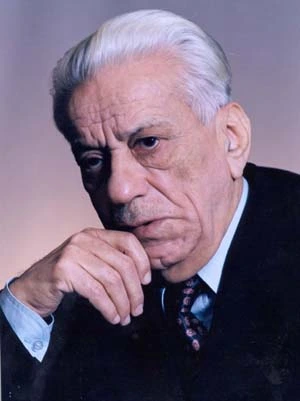

Bakhtiyar Vahabzade

Vahabzade Bakhtiyar Mahmud oglu or Zakariya oglu (August 16, 1925, Nukha - February 13, 2009, Baku) - Azerbaijani poet, playwright, literary critic, member of the Writers' Union of Azerbaijan since 1945, People's Poet of the Azerbaijan SSR (1984), Doctor of Philology ( 1964), professor, full member of the National Academy of Sciences of Azerbaijan (2000), laureate of the State Prize of the Azerbaijan SSR (1976), laureate of the USSR State Prize (1984), laureate of the MFAkhundov Literary Prize (1988), deputy of the Supreme Soviet of the Azerbaijan Republic (1990), Member of Parliament (1995, 2000), awarded the Order of Independence (1995).